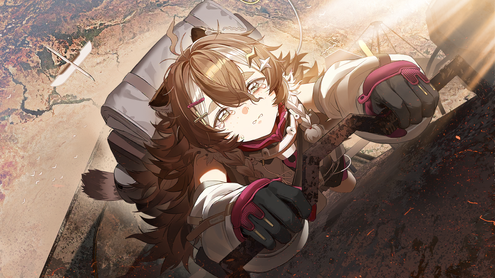
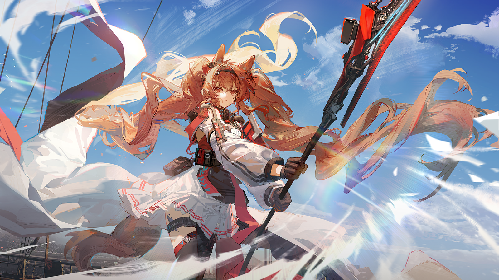
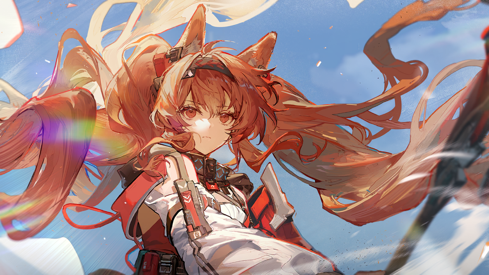
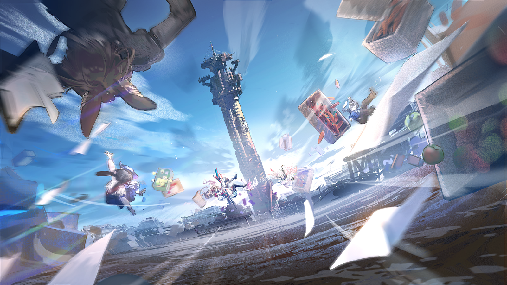
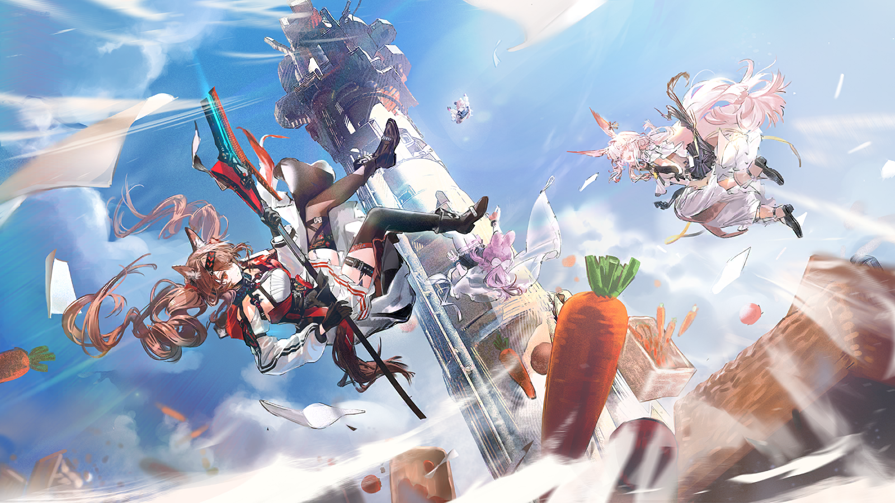

塔妮
天都亮了，不知道安洁有没有说服阿梅......

嘉辛塔
哼，要是我们之中最讲道理的安洁都拿阿梅没办法，你跟我就一人拽她的一只袖管，把整个人拖上我们的越野车！

塔妮
我喜欢这个点子！

嘉辛塔
谁啊？比我们还着急？
塔妮
看车尾的标识好像是纵贯红土公司的，他们要去的方向是......通讯塔？

塔妮
等等，你看通讯塔上层是不是有人？

嘉辛塔
阿梅？！
嘉辛塔
没错，那个毛茸茸的大尾巴......是阿梅！

塔妮
她为什么会在这个时间去修塔？难道......
嘉辛塔
没有什么难道！我才不管她为什么要修，但既然她在上面，纵贯红土公司的人又在往那里赶，就说明阿梅不是他们派过去的！
塔妮
那......前面那些赶去通讯塔的人，是找阿梅麻烦的？

嘉辛塔
找阿梅麻烦？

塔妮
嘉嘉嘉嘉辛塔——！
塔妮
你才刚开多长时间的车就敢这么踩油门？！
嘉辛塔
放心吧塔妮，你都不知道我在梦里演练这个场景已经多少次了！

塔妮
梦里——梦里像话吗？！
橙色越野车不断加速，很快就跟到了安保车队后面。
车队最后的那辆货车上的安保人员百无聊赖地打着哈欠，随后看到了窗外两张年轻明媚的笑脸。
他还没回过神来，眼前忽然出现一辆橙色的越野车横在自己面前，还顺便喷了他一头的尾气。
第二辆、第三辆、第四辆......橙色越野车像不祥的煞星，逼停了安保车队的所有用车。
司机们最后记得的是一辆发出畅快笑声的橙色越野车，慢慢消失在他们叫苦连天的抱怨声里。

塔妮
嘉辛塔......你可能有赛车的天赋......

嘉辛塔
我也觉得！等去完南境我就要去专业的赛车场跑两圈试试！
嘉辛塔
但现在，我们赶紧去通讯塔！

阿梅利亚
安洁把阿什顿部长他们拖住了？

阿梅利亚
我骗了她，她......她却还在帮我......呜......

阿梅利亚
呼......好了，阿梅，现在不是哭的时候。
阿梅利亚
通讯核心已经换好了，全自动模块的工作看起来问题也不大......

阿梅利亚
报错？！我把参数调错了？不可能啊？

阿梅利亚
等等......这是最大的一座塔，断连烧毁的电路可能比我想象的更多......
她望向通讯塔尖，一块黑灰色的面板证实了她的猜想。
阿梅利亚
还好，只要把感应器重新连接上，通讯塔就能运作了。
阿梅利亚
但从这里到通讯塔尖......好像只有无保护的维修梯能用了......

阿梅利亚
呜......别发抖啊阿梅，你可以的，你必须可以的！
小小的阿纳缇把工具调整到称手的地方，踩上了维修梯的第一阶。

塔妮
安洁！我接到嘉辛塔了！阿梅现在怎么样？

安洁莉娜
从塔底看不太清楚，我只知道刚刚她还在通讯塔的主电路板前面，照理来说只要更换通讯核心就搞定了。

嘉辛塔
按照之前我们修塔的经验来看，应该很快就好了。有了通讯塔的导航，去南境的路也能安全一些。

塔妮
太好了，我们四个终于能一起上路了！
嘉辛塔
不过在此之前我们是不是应该考虑一下，该怎么从纵贯红土公司的职员和安保部队的包围中逃出去......

安洁莉娜
我只能用重力暂时拖缓他们的脚步，希望阿梅能快一点，我还从来没有持续使用过这么长时间的源石技艺，我担心......
塔妮
我们相信你安洁！你不是跟我们说过很多在罗德岛练习源石技艺的故事吗？

安洁莉娜
你不记得我们从大涌泉镇逃出来的那次了吗！我的源石技艺是会失控的啊——
？？？
呜......呜呜......

塔妮
等一下，我怎么好像听到谁的哭声......
安洁莉娜&嘉辛塔
是阿梅！

阿梅利亚哭的时间总比别人久那么一点点。
四岁时她摔破膝盖，在河边哭了一个小时，当时她的父亲还在异国他乡打拼，她身边唯一的亲人——母亲，也在矿井工作，不能来扶她。
她哭累了之后拍拍身上的灰，一瘸一拐地走回家。
得知自己考上雷姆必拓工业大学之后，她在房间里哭了两个小时。
妈妈开心地要给她做当时很流行的胡萝卜千层派，但她不想让妈妈破费，两个人在厨房分享了一碗糖水炖胡萝卜。
妈妈离世的时候，她哭了一整天。
她曾下决心要给妈妈看看自己出人头地的样子，她想让一直操心的妈妈放心——除了父亲，自己也能成为她的依靠。
可惜她错过了机会。
她开始将所有努力的成果和证明寄回家，害怕再次失去令家人骄傲的机会。
她习惯性地加班、挨骂、再加班，研究她唯一擅长的东西，唯一能令她暂时忘却遗憾的东西。
只要坚持下去，她本应做得很出色啊......可为什么现在她站在失去工作、失去朋友、失去自信、失去梦想的边缘？
她手脚发软地往上爬，想挽回她所有做错的选择、做错的事，但她知道自己在发抖、在流泪。
她觉得自己永远爬不到顶端，永远会让别人失望，然后——
嘉辛塔
阿梅利亚！
一个熟悉的声音在她下面很远很远的地方嘶吼着。
阿梅利亚
嘉、嘉辛塔？
嘉辛塔
别回头啊笨蛋，你会掉下去的！动作不要停，有什么话直接说出来，我会在这里听着！
阿梅利亚
好、好......
阿梅利亚
嘉辛塔......真的对不起！你告诉我我其实很厉害的时候，我一开始其实——
阿梅利亚
其实不相信！
嘉辛塔
我看出来了！
阿梅利亚
公司里有太多前辈会说“你好厉害”！但其实那只是他们打招呼的一种方式！他们不会在意你做的任何东西！
嘉辛塔
你别扯着嗓子！就喊这些！扫兴的东西！我们明明还有别的要说！
阿梅利亚
我——当你，还有塔妮、安洁莉娜！你们一遍一遍鼓励我的时候！我真的开始觉得我可以做到很多事！
阿梅利亚
所以我不小心把那些从来没有对任何人说过的想法和梦告诉了你们......但......呜......我现在还做不到这些......
嘉辛塔
大点声！我听不见！
阿梅利亚
我没办法笃定地告诉你们我真的很想跟你们一起去南境！我也没办法果断地递出辞呈离开公司，我甚至连爬通讯塔都会害怕，呜——
嘉辛塔
不许哭，阿梅利亚！
阿梅利亚
然后你现在连哭也不让我哭！
嘉辛塔
......我是说！你睁开眼睛看看，你已经爬到！塔顶啦！
阿梅利亚站在通讯塔尖，太阳好像在她触手可及的地方，整座大铁屯都在她的眼中。
她研发的通讯技术从这里延伸向北，连通了一个又一个小镇，一座又一座移动采矿平台。
让每个离家的人都有机会跟自己在意的人说几句话，让难以开口、却又想传达的心意不再有“距离”作为挡箭牌。
阿梅利亚突然发现，站在这里的时候，纵贯红土公司的标志变得很小很小，而自己在地面上的投影很大很大。
阿梅利亚
我要辞职......
嘉辛塔
你说什么？
阿梅利亚
我——说——
阿梅利亚
我要辞职，我要去南境！
嘉辛塔
阿梅！通讯塔修好了没有啊！
阿梅利亚
感应器已经开始工作了，我修、修好啦——！
嘉辛塔
那你怎么一动不动的！
阿梅利亚
我、我实在没有力气了，这里好高啊......
塔妮
安保部队追上来了！快想想逃出去的方法，公司现在肯定不会放她走的！

塔妮
唉，好不容易通讯塔修好了，我们还是没办法顺利去南境吗......

安洁莉娜
......
阿梅利亚
我......呜呜......我现在该怎么办......
嘉辛塔
别哭啦，一会儿腿软了不小心站不住怎么办！

安洁莉娜
那不如......

安洁莉娜握着法杖的手在发烫，她回想每一次练习源石技艺时的感受，没有一次与现在相同。
在训练室里，她花了无数个日夜控制源石技艺的施放方式，为自己制定了一套又一套训练方案，但她的源石技艺总是很不稳定。
从刚上罗德岛那次严重的发作中好转之后，华法琳医生非常严肃地找了她一次。
华法琳医生说，重力相关的源石技艺本来就极难操控，如果无法很好地控制，就尽量少使用它。
哪怕能够完全依靠施术单元，感染者也应该时常记得这一点：
没感染的人出错，消耗的是他人的信任，而感染者出错，燃烧的是自己的生命。

华法琳的话，安洁莉娜其实听进去了。
但那句话，同样也在她心里种下了一颗小小的种子——有朝一日，她会成为那个会为一个人、一件事、一种理想，燃烧生命的人。
一种理想，现在距离她略显遥远。
但值得她拼尽全力的那件事，那些人，还有她自己，此刻就在眼前。
她已经错过了一次燃烧的机会，她不愿再错过一次。
安洁莉娜
......施术范围尽量做到最大，反重力程度尽量做到最高......
安洁莉娜
（小声）没问题。不会有问题的。
安洁莉娜
阿梅利亚！跳下来！
嘉辛塔&塔妮
什么？！
安洁莉娜
既然已经知道了我们每个人都想去南境，那就不应该停在这里！
安洁莉娜
跳下来，阿梅利亚，不要害怕！我会接住你，接住你们每个人！
阿梅利亚
我不害怕，安洁......我相信你！！
安洁莉娜
好！
安洁莉娜
塔妮、嘉辛塔，你们也准备好了吗？
嘉辛塔&塔妮
嗯！
安洁莉娜
听我的口令！
安洁莉娜
三——
安洁莉娜
二——
安洁莉娜
一——
安洁莉娜
跳——！

木箱中摆放整齐的胡萝卜、还在加紧向上层汇报的职员、四个心意相通的女孩，全都轻盈地飘到了空中。
阿什顿和安保人员感觉自己沉重的双脚失去束缚，又过于轻松地飘了起来，像是被人扔进水里的胡萝卜干。
塔妮失去重力后一时间失去了方向，在空中打转；嘉辛塔笑得开怀，充满好奇地看着这片失序的区域。

而安洁莉娜熟悉这种失重感。
正是这种感觉，带她从叙拉古到罗德岛，再从罗德岛去往千千万万的城市和地区。
她看着飘浮在身边的塔妮和嘉辛塔，看着在空中胡乱挥手的阿梅利亚，她从未像现在这样肯定，自己能成为她们最可靠的向导和朋友。
在这一方小小的飘浮天地，安洁莉娜第一次忘记了自己在成长的过程中失去了什么。
或许她错过了一些和父母相聚的时光，或许她错过了和重要的人说出心意的时机。
或许她曾对罗德岛的灾难、对红砂镇的感染者无能为力......
但此刻她手中沉甸甸的法杖在提醒她，她接住了自己的朋友，这个重量是她想要记住、想要保护的东西。
她们会四个人一起去南境。
安洁莉娜
呼......呼......好远。

塔妮
因为来的时候塔下围着的都是纵贯红土公司的车嘛，我们就只能在这儿停车了。

塔妮
终于到车前面了，我们走吧！
塔妮
天......天还在转......
嘉辛塔
通讯果然恢复了......是谁的终端在响？
阿梅利亚
我的。

阿梅利亚
我已经回复完了。
塔妮
我来看看，我来看看！

塔妮
“辞呈在右手边最底下的抽屉里，锁已经提前打开了。”
塔妮
“再也不见了，耽误我时间的垃圾们。”

安洁莉娜
哇......这是不是阿梅第一次骂人？
嘉辛塔
这就对了！以后多练习练习，还是骂轻了！

阿梅利亚
好啦，可以了吧！我也是有成长的......把终端还给我，我要把工作交流软件删了。
阿梅利亚
搞定！
嘉辛塔
好，那我们就上路吧——
优雅的夫人
嘉辛塔。
嘉辛塔
妈妈？
嘉辛塔
是爸爸让你劝我回去的吗......
优雅的夫人
不，我是来送你的。
嘉辛塔
你们同意我去南境了？
优雅的夫人
你本来也不打算征得我们的同意，不是吗？

嘉辛塔
......
优雅的夫人
我们还是会担心你，嘉辛塔。你的身体情况，让你人生的容错比很多人都要低。
优雅的夫人
但我看见你的笑容了。
嘉辛塔
......欸？
优雅的夫人
你开车时的笑容，是自从你感染之后，我和你父亲就再也没在你脸上见到过的表情。
优雅的夫人
正如你的朋友塔妮小姐所说的那样......
塔妮
欸？我？
优雅的夫人
我们虽然不认同你的决定，但我们终于明白了，你与我们分享你想做的事，是因为爱。
优雅的夫人
我已经想通了。至于你的父亲......那天他说了些违心的气话。我替他向你道歉。你从来都不是坎贝尔家的污点，嘉辛塔。
优雅的夫人
我觉得他是在后悔的，只是那个人在生意场上周旋了太久，甚至不愿意跟自己的女儿好好道个歉。

嘉辛塔
妈妈......
嘉辛塔
不，没什么。如果等我从南境回来时他还没想通，你会站在我这边的，对吗？
优雅的夫人
当然。
优雅的夫人
上路吧孩子们。不用担心你们在纵贯红土公司闹出的那些小插曲，我们会想办法解决。
优雅的夫人
没有什么应该牵绊住我的孩子上路的步伐，哪怕是我跟你的父亲。
嘉辛塔
谢谢你们......

塔妮
（小声）真好啊......
塔妮忽然有种把终端从背包深处拿出来的冲动。
但那太麻烦了，她想。
现在最重要的是赶紧出发，前往南境，只要到了那里......

安洁莉娜
走，我们启程吧！

安洁莉娜
通往南境的关口已经打开，沙暴正在向我们行进的路段移动......
塔妮
方向没有问题，进入沙暴范围内，我就不能为大家提供导航了，全得靠阿梅修好的通讯塔啦。
安洁莉娜
已经能看见沙暴的轮廓了。
安洁莉娜
说起来，塔妮，你的奶奶当年是怎么穿越沙暴抵达南境的，她告诉过你吗？
塔妮
她当然说过啦。
塔妮
奶奶说，她挑了一个源石浓度低，风沙也没那么大的日子穿越这片区域。
塔妮
幸运的是，她穿越危险区的过程中，源石浓度一直没有太大变化，但快速移动型沙暴也让她吃了不少苦头。
塔妮
她最后是靠着怀表增强了自己的法术，才没有被沙暴吞没，看见了南境的风景！
安洁莉娜
南境的风景是什么样的？
塔妮
她说南境和大铁屯......和全雷姆必拓的风景都不一样！
塔妮
那里的地面仿佛一面镜子，是大片大片的晶体！
安洁莉娜
晶体？
塔妮
奶奶只说那里很漂亮，有清透的天空，有地面晶体上的积水，有缝隙中的小花，但我后来也找了很多资料......
塔妮
据说那些晶体其实是和源石伴生的矿物。南境的源石早已经全部活性化，成了危险区源石粉尘的一部分。
塔妮
而那些剩下的矿物非常坚硬，硬到连源石活性化的能量也不能破坏它们原有的结构......
塔妮
——呜哇！刚才我们是撞到石头了吗？我的背包都差点飞出去了！
嘉辛塔
吓死我了，再检查一下安全带有没有系好！
塔妮
既然这样，在进入颠簸路段之前......给！
阿梅利亚
胡萝卜披萨？
嘉辛塔
据说这东西现在是大铁屯的新特产，可......为什么？
塔妮
“胡萝卜披萨，给亲朋送伴手礼的不二之选，仇人吃了都会重归于好。”
塔妮
这可是店长冲我打包票的。
塔妮
一起吃完披萨，之后谁都不准再提阿梅被公司欺负的事，连开玩笑都不可以！
阿梅利亚
你们......呜......对不起......谢谢......
嘉辛塔
知道啦，吃完之后——不，就算没吃，我们也一直是最好的朋友啊。
安洁莉娜
......
塔妮
安洁，你怎么不吃！
安洁莉娜
一定得吃胡萝卜披萨吗......
塔妮
你不喜欢？店长说他手艺很正宗的，你一定能尝到家乡的味道！
安洁莉娜
我......我开车不方便！
安洁莉娜
我一会儿就得和大铁屯的塔台联络来规避危险了，没空吃东西的——
塔妮
我可以喂你吃呀？
安洁莉娜
呜啊啊——